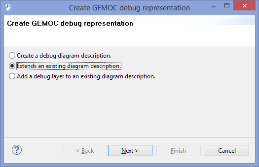
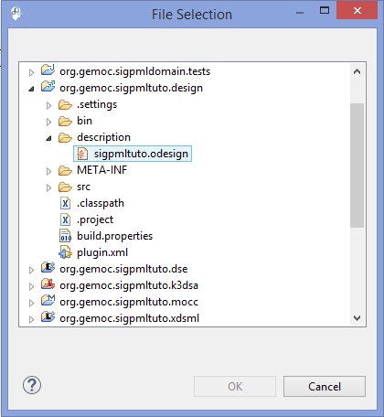
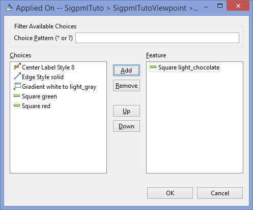
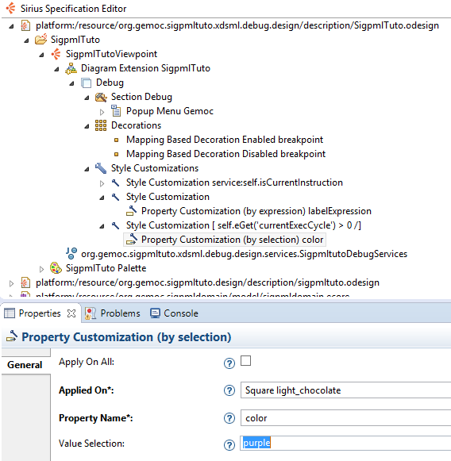

As the section dedicated to the graphical syntax, the animator is defined as a Sirius viewpoint based on the odesign file
To create a debug viewpoint, on the Melange file we select "Create Animator Project for language"→select the language name→Extends an existing diagram description (as the next picture).
Create a debug representation. 
Now a Sirius project is created with a file odesign in the description folder. Open the odesign file and on a right click select "Load ressource" and select the odesign file of the the initial graphical syntax as in the next picture.
Select the odesign ressource. 
Now we edit the odesign file and customizing the debug layer. Open the Debug layer and add Style cuistomizations as the next picture.
Adding Style customization. 
On this style, we add a property customization to change the label of the Block in our future model.
Adding Property customization. 
We fill the properties of this element. First the field AppliedOn to select the graphical element of the Block (Square light_chocolate).
Select Graphical element. 
Fill the next fileds like the next picture.
.Property Customization.

We add another style customization and fill the predicate expression as the next picture.
.Second Style Customization

On this style, we add a property customization (by expression) to change the block color under the previous condition when the currentExecCycle > 0
Adding Property customization. 
For now the language is totaly defined and executable, so we can used the SigPML Language !!